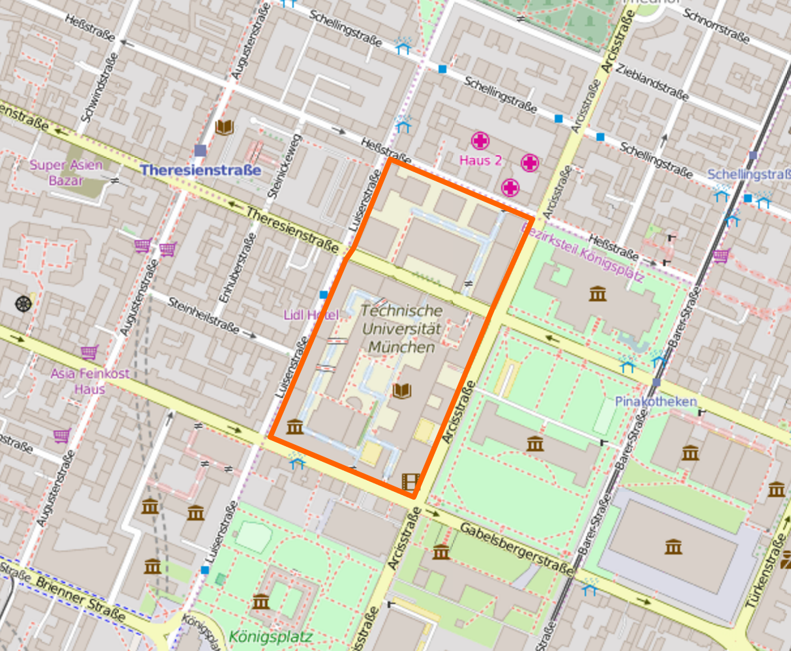

Professor for Modeling Spatial Mobility (MSM) Department of Civil, Geo and Environmental Engineering (BGU) Technical University of Munich (TUM) Augustenstr. 21 (map) 80798 Munich, Germany Phone: +49 (89) 289 22699
You may also contact individual team members. |
 |
The research group Modeling Spatial Mobility focusses on the development and application of land use model, transport models, and integrations thereof.